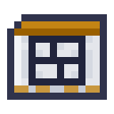

Models and Tests
Every model is tested on ten benchmarks. Each test uses examples practice never shows, and each job asks its model in exactly the test's format, so a test score is how often an agent will decide right.
| Benchmark | Practice | The test | Passes at | Used for |
|---|---|---|---|---|
| Forecasting | Forecast Dataset | crops' ages and machines' progress at every look | loss ≤ 0.21 | the Forecaster |
| Recall | Storage Dataset | goods and their chests, then one kind asked again | 90% | storing |
| Reversal | Errand Dataset | waymarks on the way out, then the way home | 90% | hauling |
| Induction | Pattern Dataset | letters where a run comes round again | 90% | the Architect |
| Sorting | Sorting Dataset | things named, and the kind of each, some made up | 90% | sorting |
| Orders | Orders Dataset | orders, and what was meant by them | 90% | orders |
| Reading | Archive Drive | records no shard carries | loss ≤ 1.40 | the Reader |
| Control | Process Dataset | melts of each ore, held at 90% of their looks | 90% | the Smelter |
| Survey | Survey Dataset | rows of ground, and where the first of an ore lies | 90% | the Surveyor |
| Pilot | Flight Dataset | flights in each wind, held at 90% of their looks | 90% | the flight frame |
Hover over a benchmark on the Core's Tests tab for the exact format. The Try tab shows the model answering a fresh example, the way an agent would ask it.
Practising several things
The Core's four Data slots are practised together: every step draws its batch from one of them in turn. One model can learn everything, if it is big enough and shaped for it. Each benchmark asks for something different: forecasting a machine only needs the look just before, and so does forecasting an average field; recall has to find a pair far back; reversal needs to know where each waymark was; induction has to look back for what followed the same letter last time; sorting has to find the word in a name that settles its kind.
Practising by playing
Control is practised by playing, not from examples: the Core plays melts with the model's own choices, and the model learns from each choice by how much better the melt did after it than after other choices made at the same look and temperature. A choice that went well is learned from more, one that went badly less. It takes longer than learning from examples, since every step plays its melts first. A melt is held when 90% of its looks end in the band, which is what earns a Smelter's third ingot, and the test scores the share held of the ore the model holds worst. Holding a melt means foreseeing what comes, when the fresh charges drop the melt and how the ore drifts, which needs a model that knows where in the melt it is and which ore it began with. A model that sees only the last few characters holds most copper melts but no gold or iron; a two-block transformer passes after two to four hundred steps, though its score still swings now and then as it practises.
Checkpoints
 Crafting
Crafting


A Checkpoint holds one model: its machines, its weights, how long it trained and its scores. Saving runs every test first, so the scores on a checkpoint are always the ones it earned. Saving over a checkpoint replaces the model on it.
How big a model may be
An agent can carry a model of up to 40,000 parameters in its head. A bigger model stays in a Model Server and is asked over relays: see Serving Models. The Train tab counts a model's parameters.
Reading ahead
A model that can see the letter it is asked to predict is not predicting anything. The Core checks every model for this. A model that reads ahead scores very well and means nothing; its checkpoint says so, and the Reader turns it away.




 Amethyst ShardWeight CrystalCheckpoint
Amethyst ShardWeight CrystalCheckpoint